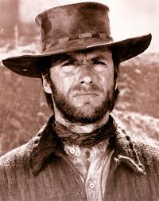

| Mi nombre es Clint Eastwood, nací en San Francisco (California) en 1930. Soy actor, director, productor, músico y compositor estadounidense. Mi primer papel más relevante empezó con una serie de televisión llamada "Rawhide", como actor secundario, en 1959. Pero alcancé la fama interpretando al "Hombre sin nombre" en los spaguetti western comocidos como "La Trilogía del dólar", con las películas "Por un puñado de dólares", "La muerte tenía un precio", y "El bueno, el feo, y el malo", durante los años 70 y 80. Antes de empear mi carrera en el cine, tuve numerosos empleos, como socorrista, repartidor de periódicos, empleado de tienda, bombero forestal, o caddie de golf. Aunque fui reclutado por el ejército de los Estados Unidos, destinado a Fort Ord (California), durante la Guerra de Corea, donde desempeñé papeles de socorrista e instructor de natación durante todo mi servicio militar. |

CLINT EASTWOOD